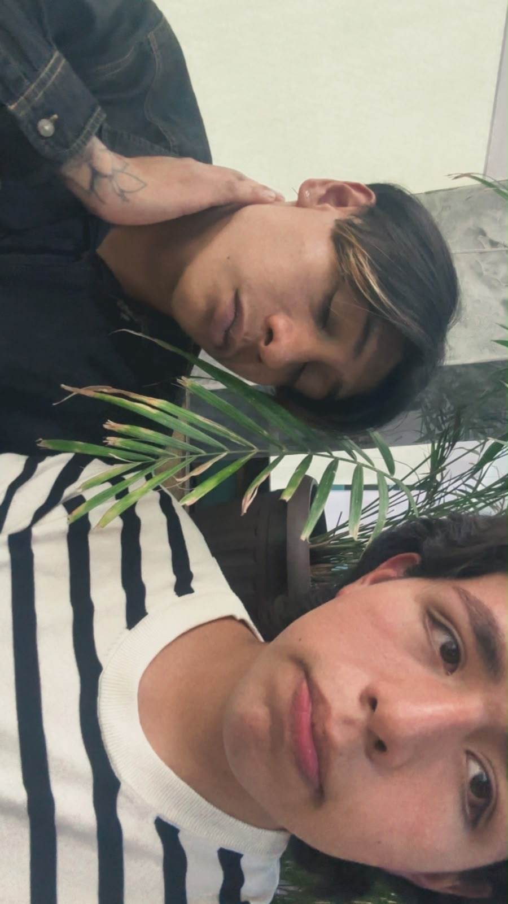

🌹 Te amo Ale 🌹
Gracias por estos 6 Meses a tu lado
"Cada día contigo es un poema que el corazón escribe"
❤️ 6 meses de amor, 6 meses de magia ❤️

✨ Nuestro primer atardecer

💖 Tu sonrisa ilumina mis días
🌸 Momentos que atesoro
🌺 Eres mi razón para sonreír
💝 Por siempre tú y yo
🖱️ Desliza o usa los botones para ver más recuerdos